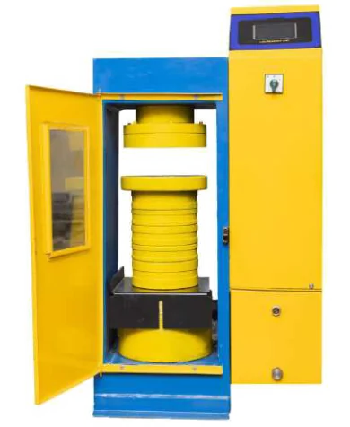

Our Mission
Our mission is to provide reliable laboratory testing equipment that supports quality assurance, engineering accuracy, and confidence in construction materials testing.
WHO WE ARE
Arab Technology is a specialized manufacturer and supplier of laboratory testing equipment for soil, concrete, asphalt, and construction materials.
Explore equipment
TESTING EQUIPMENTWe provide a comprehensive range of testing instruments and laboratory equipment designed to support engineering laboratories, construction companies, consulting firms, research centers, and quality control departments.
Our focus is on delivering reliable equipment, accurate testing solutions, and practical products that meet the technical requirements of modern construction and infrastructure projects.
Our mission is to provide reliable laboratory testing equipment that supports quality assurance, engineering accuracy, and confidence in construction materials testing.
To become a trusted name in the laboratory testing equipment industry, expanding our presence in local and international markets through quality, innovation, and long-term customer relationships.

We understand the importance of accurate testing in engineering and construction. That is why we focus on providing practical equipment solutions, competitive commercial offers, and responsive customer service to meet our clients' needs.
To be more than just an equipment supplier — to be a reliable partner in supporting laboratories, engineering projects, and the construction industry.
Choose your application and our team will guide your enquiry.
من نحن
عرب تكنولوجي شركة متخصصة في تصنيع وتوريد معدات الاختبارات المعملية للتربة والخرسانة والأسفلت ومواد البناء.
تصفح الأجهزةنوفر مجموعة شاملة من أجهزة الاختبار والمعدات المعملية لدعم المعامل الهندسية وشركات المقاولات والمكاتب الاستشارية ومراكز الأبحاث وأقسام مراقبة الجودة.
نركز على توفير معدات موثوقة وحلول اختبار دقيقة ومنتجات عملية تلبي المتطلبات الفنية لمشروعات البناء والبنية التحتية الحديثة.
رسالتنا توفير أجهزة اختبارات معملية موثوقة تدعم ضمان الجودة والدقة الهندسية والثقة في اختبارات مواد البناء.
أن نصبح اسمًا موثوقًا في مجال أجهزة الاختبارات المعملية، مع توسيع حضورنا في الأسواق المحلية والدولية من خلال الجودة والابتكار والعلاقات طويلة الأمد مع العملاء.
ندرك أهمية الاختبارات الدقيقة في الهندسة والبناء؛ لذلك نركز على تقديم حلول عملية للمعدات وعروض تجارية تنافسية وخدمة عملاء سريعة الاستجابة لتلبية احتياجات عملائنا.
أن نكون أكثر من مجرد مورد معدات؛ بل شريكًا موثوقًا في دعم المعامل والمشروعات الهندسية وقطاع البناء.
اختار نوع احتياجك وسيُساعدك فريقنا في طلبك.